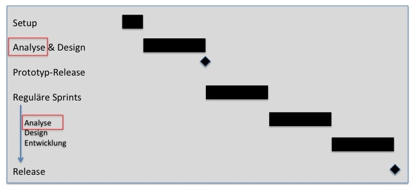

Die Anfordrungen werden in folgenden Schritten erhoben:
-
Alle Anforderungen werden zunächst in Workshops besprochen und die Ergebnisse in Protokollen festgehalten. In die Protokolle
können direkt Kommentare eingetragen werden und Feedback gegeben werden.
-
Vom Analysten werden die Workshopergebnisse interpretiert und aufbereitet in das Produkt Backlog übernommen. Dadurch werden bereits Kandidaten für
Kennzahlen, Kontextelemente und Spezifikationen für Informationsobjeke automatisch abgeleitet.